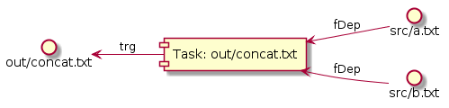
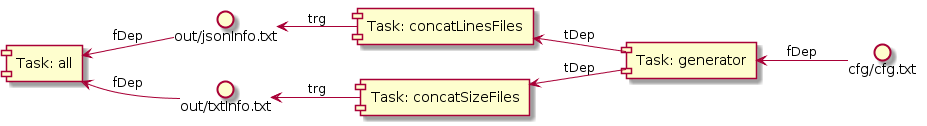
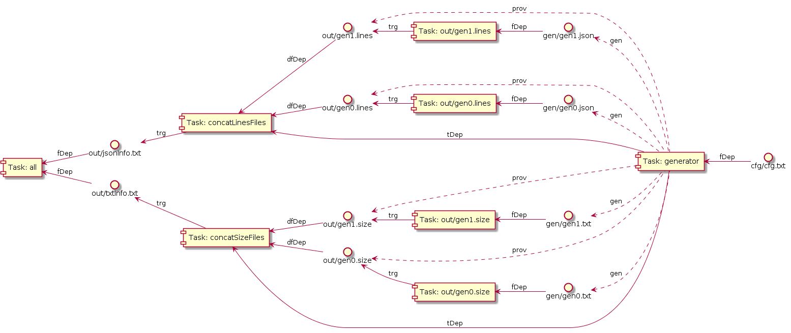

xbuild provides a minimalistic API. Contrary to scons or make it doesn't provide any high level patterns and gypsy-magics like pattern rules or environments. xbuild is python based. Python is a feature rich and popular scripting language, which allows you to programatically build up the dependency graph in many different ways. It has also thousands of useful, easy to use modules which can help a lot. With xbuild you can use your own patterns for your build system.
In xbuild the main dependency graph entity is the Task. A task may have targets and dependencies. Targets are always files. The dependencies can be files or other Tasks.The Task constructor has arguments which accepts function references, here are them:
The main API class is the Builder. Here are its most important functions:
def addTask(
self, name=None, targets=[], fileDeps=[], taskDeps=[], dynFileDepFetcher=fetchAllDynFileDeps, taskFactory=None,
upToDate=targetUpToDate, action=None, prio=0, summary=None, desc=None
):
'''Adds a Task to the dependency graph.'''
def buildOne(self, target):
'''Builds a target. "target" can also be a task name.'''
def build(self, targets):
'''Builds a list targets. A "target" can also be a task name.'''
def clean(self, targetOrNameList):
'''Cleans a list of targets. (The list entries can be targets and task names).'''
def cleanOne(self, targetOrName):
'''Cleans a target or a task referred by its name.'''
def listTasks(self):
'''Lists tasks which have summary.'''
from mockfs import MockFS
from xbuild import Builder, targetUpToDate
# It's an action function.
def concat(bldr, task):
res = ''
# Read and append all file dependencies.
for src in task.getFileDeps():
res += bldr.fs.read(src)
# Write targets.
for trg in task.targets:
bldr.fs.write(trg, res, mkDirs=True)
return 0
# This example runs on a virtual (mock) filesystem.
fs = MockFS()
# Let's create some files for input.
fs.write('src/a.txt', "aFile\n", mkDirs=True)
fs.write('src/b.txt', "bFile\n", mkDirs=True)
# Create a Builder.
bldr = Builder(fs=fs)
# Create a task for concatenating the two files.
bldr.addTask(
targets=['out/concat.txt'],
fileDeps=['src/a.txt', 'src/b.txt'],
upToDate=targetUpToDate, # It is the default up-to-date function, can be skipped.
action=concat)
# Build the target.
bldr.buildOne('out/concat.txt')
# Print the target.
print "Content of target:\n{}".format(fs.read('out/concat.txt'))
print "After-build PlantUML:\n" + bldr.db.genPlantUML()
Note that the file system is accessed via the fs object. It makes possible easy mocking and mapping non file system resources as file system resources in python level.
Here is the visual representation of the example task.
| Notation | Description |
|---|---|
| trg | Target |
| fDep | File dependency |
| tDep | Task dependency |
| dfDep | Dynamic file dependency |
| gen | Generated file |
| prov | Provided file |
The generated code is used directly by the parent task.
from mockfs import MockFS
from xbuild import Builder, fetchAllDynFileDeps
# It's an action function.
def concat(bldr, task):
res = ''
# Read and append all file dependencies.
# getFileDeps() returns the static and the dynamic file dependencies.
for src in task.getFileDeps():
res += bldr.fs.read(src)
# Write targets.
for trg in task.targets:
bldr.fs.write(trg, res, mkDirs=True)
return 0
# Action function for the generator.
def generatorAction(bldr, task):
assert len(task.fileDeps) == 1
cfgPath = task.fileDeps[0]
cfgValue = int(bldr.fs.read(cfgPath).strip())
for i in range(cfgValue):
fpath = 'gen/gen{}.txt'.format(i)
bldr.fs.write(fpath, 'Generated file {}\n'.format(i), mkDirs=True)
# Important! All the generated files have to be appended for Task.generatedFiles.
# In real case, when the generator is an external binary, you can use
# Task.addGeneratedFiles(fs, dpath) for scanning up the generators output directory.
task.generatedFiles.append(fpath)
return 0 # success
# This example runs on a virtual (mock) filesystem.
fs = MockFS()
# Let's create some static files for input.
fs.write('src/a.txt', "aFile\n", mkDirs=True)
fs.write('src/b.txt', "bFile\n", mkDirs=True)
# Creating a generator configuration file.
# Here content 3 means the number of files, the generator creates.
fs.write('cfg/cfg.txt', '3', mkDirs=True)
# Create a Builder.
bldr = Builder(fs=fs)
# Create the generator task.
bldr.addTask(
name='generator',
fileDeps=['cfg/cfg.txt'],
action=generatorAction)
# Create a task for concatenating files.
bldr.addTask(
name='all', # It is just a short alias name for the task.
targets=['out/concat.txt'],
fileDeps=['src/a.txt', 'src/b.txt'],
taskDeps=['generator'], # Note: this task depends on the generator task too.
dynFileDepFetcher=fetchAllDynFileDeps, # It is the default, you can skip it.
action=concat)
# Print the PlantUML representation of the before-build dependency graph.
print "Before-build PlantUML:\n" + bldr.genPlantUML()
# Build the target. It is the same as bldr.buildOne('out/concat.txt')
bldr.buildOne('all')
# Print the target.
print "Content of target:\n{}".format(fs.read('out/concat.txt'))
# Print the PlantUML representation of the after-build dependency graph.
print "After-build PlantUML:\n" + bldr.db.genPlantUML()
Here is the before-build dependency graph.
Here is the after-build dependency graph.
Note: if a generator generates a lot of unused temporary files (garbage) that would slow down the up-to-date checks and would result ugly/bloated PlantUML generation. In the future it would worth to register only the useful files as generatedFiles and register the remaining files as garbage. garbage would be considered only at clean execution.
The generated code needs some compilation before it is used by the parent task. E.g. the generator creates .c files, bud the parent task (e.g. linker) needs compiled .o files. In this case the generator task needs to fill the providedFiles field with the .o files. At task creation the taskFactory argument have to be passed. taskFactory is a reference to a function which must return a list of tasks for building the provided files.
In the following example the generator creates .txt files. Its parent task creates a file which contains the size of every .txt files. For this the generator task will provide .size files for every .txt files. The .size files are built by tasks which are created by the generator's sizeTaskFactory function.
from mockfs import MockFS
from xbuild import Task, Builder, FetchDynFileDeps, fs as fs
# It's an action function.
def concat(bldr, task):
res = ''
# Read and append all file dependencies.
# Task.getFileDeps() returns all file dependencies.
for src in task.getFileDeps():
res += bldr.fs.read(src)
# Write targets.
for trg in task.targets:
bldr.fs.write(trg, res, mkDirs=True)
return 0
# Action function for the generator.
def generatorAction(bldr, task):
assert len(task.fileDeps) == 1
cfgPath = task.fileDeps[0]
cfgValue = int(bldr.fs.read(cfgPath).strip())
for i in range(cfgValue):
fpath = 'gen/gen{}.txt'.format(i)
bldr.fs.write(fpath, 'Generated file {}\n'.format(i * '*'), mkDirs=True)
# Important! All the generated files have to be appended for Task.generatedFiles.
# In real case, when the generator is an external binary, you can use
# Task.addGeneratedFiles(fs, dpath) for scanning up the generators output directory.
task.generatedFiles.append(fpath)
ppath = 'out/gen{}.size'.format(i)
# This task will provide .size files. These files need additional build steps, the
# taskFactory function is responsible for creating tasks to build the providedFiles
# (the .size files in this case).
task.providedFiles.append(ppath)
return 0 # success
# Action function for size file building
def sizeAction(bldr, task, prefix):
assert len(task.fileDeps) == 1
src = task.fileDeps[0]
size = len(bldr.fs.read(src))
content = '{} {} = {}\n'.format(prefix, src, size)
for trg in task.targets:
bldr.fs.write(trg, content, mkDirs=True)
return 0
def sizeTaskFactory(bldr, task, prefix):
tasks = []
for trg, src in zip(task.providedFiles, task.generatedFiles):
tasks.append(
Task(
targets=[trg],
fileDeps=[src],
action=(sizeAction, {'prefix': prefix}))) # Note: this way you can pass kwargs to callbacks
return tasks
# This example runs on a virtual (mock) filesystem.
fs = MockFS()
# Creating a generator configuration file.
# Here content 3 means the number of files, the generator creates.
fs.write('cfg/cfg.txt', '3', mkDirs=True)
# Create a Builder.
bldr = Builder(fs=fs)
# Create the generator task.
bldr.addTask(
name='generator',
fileDeps=['cfg/cfg.txt'],
action=generatorAction,
taskFactory=(sizeTaskFactory, {'prefix': 'size of'})) # Note how to pass kwargs.
# Create a task for concatenating files.
bldr.addTask(
name='all', # It is just a short alias name for the task.
targets=['out/concat.txt'],
taskDeps=['generator'],
dynFileDepFetcher=FetchDynFileDeps(fetchProv=True), # Fetches all provided files.
action=concat)
# Print the PlantUML representation of the before-build dependency graph.
print 'Before-build PlantUML:\n' + bldr.genPlantUML()
# Build the target. It is the same as bldr.buildOne('out/concat.txt')
bldr.buildOne('all')
# Print the target.
print "Content of target:\n{}".format(fs.read('out/concat.txt'))
# Print the PlantUML representation of the after-build dependency graph.
print 'After-build PlantUML:\n' + bldr.db.genPlantUML()
The before-build dependency graph is simple:
And here is the after-build dependency graph:
A generator can generate many kind of files. And the different kind of files need to be supplied for different kind of parent tasks. For example a generator can generate .c and .json files. One parent task is a linker, it needs the compiled .o files, the other parent task is a document builder and that needs .xml files built from the .json files.
In xbuild this is solved by the dynFileDepFetcher task callback method. This method must be passed to the parent tasks of the generators. This method simply selects that which generated or provided files are needed from the generator task.
The default method is this:
def fetchAllDynFileDeps(genTask):
return genTask.generatedFiles, genTask.providedFiles
In most cases you have to provide your own implementation. It is simple. The method gets a generator task and you have to return the generated and provided files needed for the parent task.
In the above code example this is used:
dynFileDepFetcher=FetchDynFileDeps(fetchProv=True)
FetchDynFileDeps is just a helper class from xbuild/callbacks.py. Check this file for other pre-implemented callback methods.
Here the generator generates .txt and .json files. The required outputs are:
Here is the before-build dependency graph.
The after-build dependency graph is here.
And for finally here is the code.
import json
from mockfs import MockFS
from xbuild import Task, Builder, FetchDynFileDeps, EndFilter
# It's an action function.
def concatAction(bldr, task):
res = ''
# Read and append all file dependencies (static + dynamic dependencies).
for src in task.getFileDeps():
res += bldr.fs.read(src)
# Write targets.
for trg in task.targets:
bldr.fs.write(trg, res, mkDirs=True)
return 0
# Action function for the generator.
def generatorAction(bldr, task):
assert len(task.fileDeps) == 1
cfgPath = task.fileDeps[0]
cfgValue = int(bldr.fs.read(cfgPath).strip())
for i in range(cfgValue):
# generate .txt file
fpath = 'gen/gen{}.txt'.format(i)
bldr.fs.write(fpath, 'Generated file {}\n'.format(i * '*'), mkDirs=True)
task.generatedFiles.append(fpath)
task.providedFiles.append('out/gen{}.size'.format(i))
# generate .json file
fpath = 'gen/gen{}.json'.format(i)
jsonStr = json.dumps({'list': [ 'list entry: ' + i * '*' for j in range(i)]}, indent=2)
bldr.fs.write(fpath, jsonStr, mkDirs=True)
task.generatedFiles.append(fpath)
task.providedFiles.append('out/gen{}.lines'.format(i))
return 0 # success
# Action function for size and lines file building
def countAction(bldr, task, prefix, countFn):
assert len(task.fileDeps) == 1
src = task.fileDeps[0]
cnt = countFn(bldr.fs.read(src))
content = '{} {} = {}\n'.format(prefix, src, cnt)
for trg in task.targets:
bldr.fs.write(trg, content, mkDirs=True)
return 0
def taskFactory(bldr, task):
def countLines(text):
return len(text.splitlines())
tasks = []
for trg, src in zip(task.providedFiles, task.generatedFiles):
if trg.endswith('.size'):
assert src.endswith('.txt')
prefix, countFn = 'size of', len
elif trg.endswith('.lines'):
assert src.endswith('.json')
prefix, countFn = 'number of lines in', countLines
tasks.append(
Task(
targets=[trg],
fileDeps=[src],
action=(countAction, {'prefix': prefix, 'countFn': countFn})))
return tasks
# This example runs on a virtual (mock) filesystem.
fs = MockFS()
# Creating a generator configuration file.
# Here content 2 means the number of files, the generator creates.
fs.write('cfg/cfg.txt', '2', mkDirs=True)
# Create a Builder.
bldr = Builder(fs=fs)
# Create the generator task.
bldr.addTask(
name='generator',
fileDeps=['cfg/cfg.txt'],
action=generatorAction,
taskFactory=taskFactory)
# Create a task for concatenating the .size files
bldr.addTask(
name='concatSizeFiles',
targets=['out/txtInfo.txt'],
taskDeps=['generator'],
dynFileDepFetcher=FetchDynFileDeps(EndFilter('.size'), fetchProv=True),
action=concatAction)
# Create a task for concatenating the .lines files
bldr.addTask(
name='concatLinesFiles',
targets=['out/jsonInfo.txt'],
taskDeps=['generator'],
dynFileDepFetcher=FetchDynFileDeps(EndFilter('.lines'), fetchProv=True),
action=concatAction)
# Create a main task.
bldr.addTask(
name='all',
fileDeps=['out/txtInfo.txt', 'out/jsonInfo.txt'])
# Print the PlantUML representation of the before-build dependency graph.
print 'Before-build PlantUML:\n' + bldr.genPlantUML()
# Build the main task.
bldr.buildOne('all')
# Print the target.
print "Content of out/txtInfo.txt:\n{}".format(fs.read('out/txtInfo.txt'))
print "Content of out/jsonInfo.txt:\n{}".format(fs.read('out/jsonInfo.txt'))
# Print the PlantUML representation of the after-build dependency graph.
print 'After-build PlantUML:\n' + bldr.db.genPlantUML()